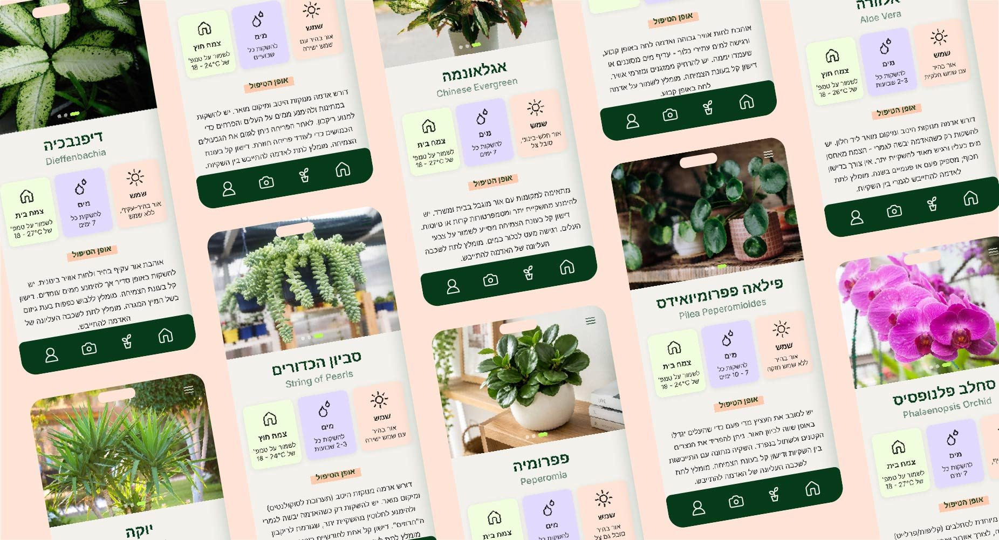
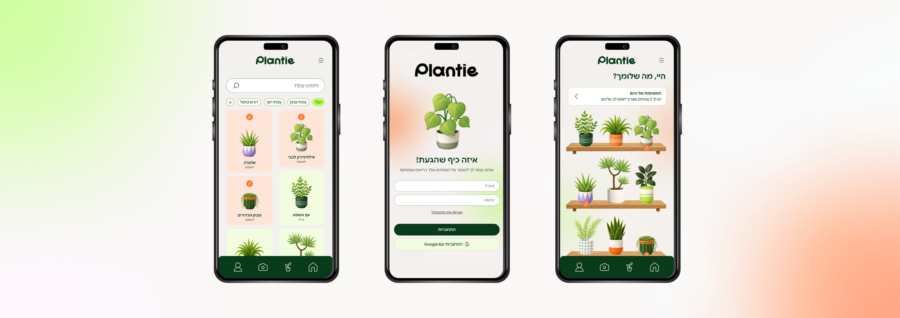
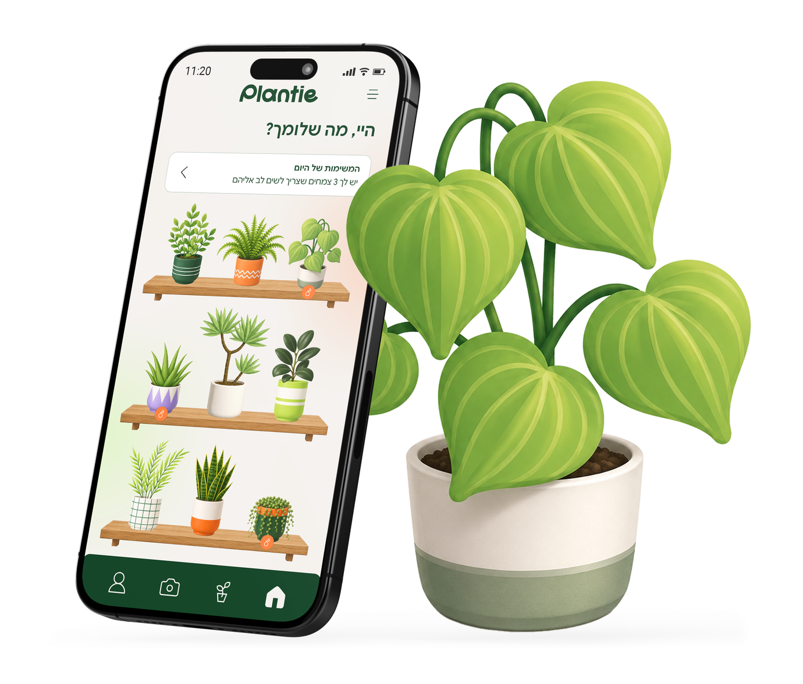

נעשה במסגרת קורס John Bryce
2026
רבים מאיתנו מביאים צמח הביתה בהתלהבות, ואחרי כמה שבועות מגלים עלים צהובים, אדמה שנראית לא בסדר, ותחושה שאנחנו מנחשים. הידע קיים, אבל הוא מפוזר בין אתרים ואפליקציות, כתוב לרוב באנגלית ובשפה מקצועית, ולא אומר מה לעשות עכשיו. זה נכון במיוחד למי שרק התחיל: בני ובנות 16 עד 34 שמעצבים דירה חדשה ורוצים בית ירוק, אבל לא יודעים איזה צמח יש להם, כמה אור הוא צריך וכל כמה זמן להשקות אותו.
יצרתי את Plantie כדי להחזיר להם את הביטחון. מצלמים את הצמח, והאפליקציה מזהה אותו ומציגה דף ברור: שמו בעברית ובלטינית, כמה שמש הוא צריך, מתי להשקות, באיזו טמפרטורה לשמור עליו ומה רמת הקושי שלו. כשמשהו משתבש, אפשר לצלם שוב או לבחור תסמין, ולקבל כיוון ברור במקום ניחוש. ב"הצמחים שלי" רואים במבט אחד מי בריא ומי צריך השקיה, ודף הבית מזכיר מה לעשות היום. כך הטיפול בצמחים הופך משגרה מלחיצה לשגרה פשוטה, גם למי שמתחיל מאפס.


